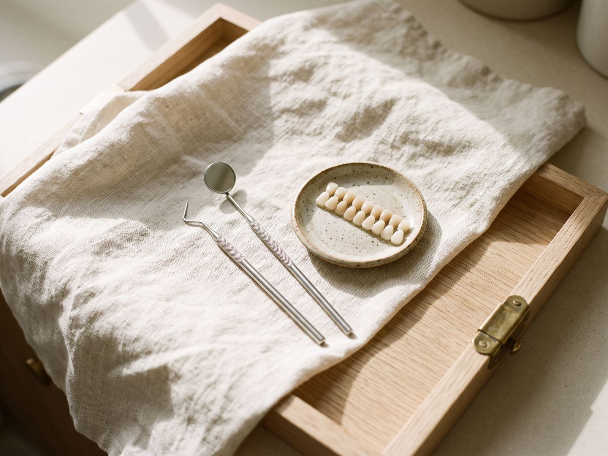
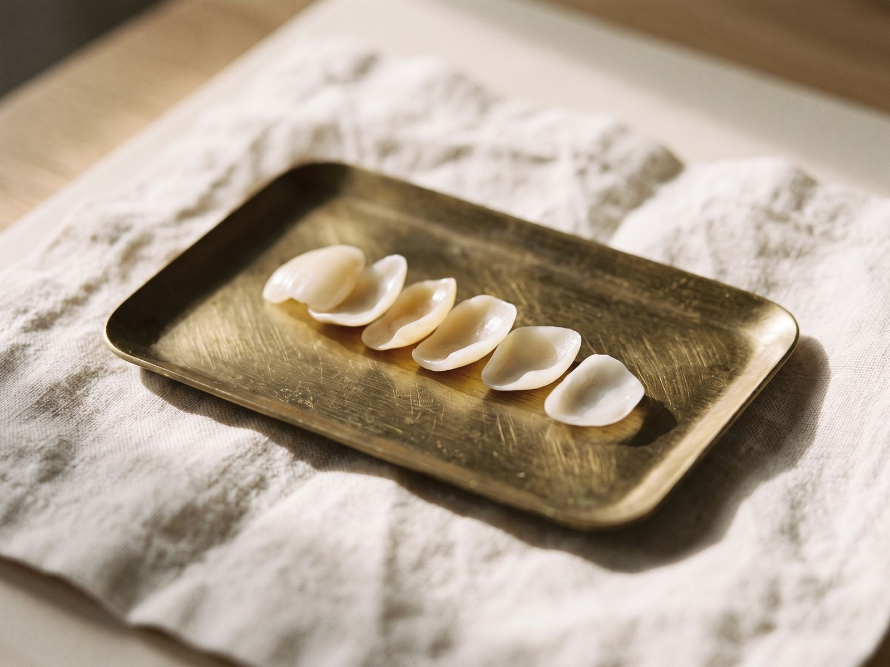

Treatments
Care for every stage of life
From routine check-ups to restoring and improving your smile, every treatment begins with a conversation. We'll explain your options, the costs and the alternatives, so you can decide what's right for you.

Treatment
Check-ups & dental health
A check-up is a chance for your dentist to look at your teeth, gums, mouth and the soft tissues of your face and neck, and to talk through anything that has been bothering you. Picking up small problems early usually means simpler treatment.
Who it's for
Everyone, from young children to older adults. How often you need a check-up depends on your own oral health. Your dentist will recommend an interval that suits you, which may be anywhere from a few months to up to two years.
What to expect
- A quick update of your medical history and any medicines you take
- A thorough look at your teeth, gums, bite and soft tissues, including a mouth cancer check
- X-rays only when they're needed
- A clear explanation of what we've found, your options and a written estimate before any treatment

Treatment
Hygienists & therapists
Our hygienists and therapists focus on prevention: keeping gums healthy, removing hardened deposits (tartar) that brushing can't shift, and helping you find a home routine that works. Dental therapists can also carry out some treatments, such as certain fillings, as part of a plan agreed with your dentist.
Who it's for
Anyone who wants to keep their gums healthy, and especially people with bleeding gums, gum disease, braces, implants or a history of staining. Your dentist will suggest how often you'd benefit from a visit.
What to expect
- A check of your gum health and a gentle clean to remove plaque, tartar and surface stains
- Tailored advice on brushing, interdental cleaning and diet
- A chance to try the brushes and aids that suit your mouth
- If you find cleaning uncomfortable, tell us and we'll talk about ways to make it easier

Treatment
Tooth-coloured fillings
Tooth-coloured (composite) fillings repair teeth affected by decay, wear or small chips. The material is matched to the shade of your tooth and bonded in place, so the repair blends in with the rest of your smile.
Who it's for
People with decay, a worn or broken edge, or an old filling that needs replacing. Very large cavities may be better restored with an inlay or a crown, and your dentist will talk you through the options.
What to expect
- A local anaesthetic to numb the tooth, if needed
- Removal of the decay, then the tooth is built up in thin layers and set with a blue curing light
- Shaping and polishing so your bite feels comfortable
- Your lip and cheek may stay numb for a few hours afterwards

Treatment
Cosmetic dentistry
Cosmetic dentistry covers treatments that change how your teeth look, from whitening and tooth-coloured bonding to veneers, crowns and clear aligners. We start by listening to what you'd like to change, then talk honestly about what is realistic for your teeth.
Who it's for
Adults with healthy teeth and gums who'd like to change the colour, shape, size or alignment of their teeth. Any decay or gum problems are treated first.
What to expect
- An unhurried consultation to understand your goals
- An explanation of the options, including the least invasive ones, with the benefits, risks and limitations of each
- A written plan and estimate before anything begins
- Time to think it over, with no pressure to decide on the day

Treatment
Tooth whitening
Professional whitening uses a carefully controlled gel to lighten the natural colour of your teeth. In the UK, tooth whitening can only legally be provided by a dentist, or by a hygienist or therapist working to a dentist's prescription. It must also follow a proper examination. VERIFY: whitening system offered
Who it's for
Adults aged 18 and over with healthy teeth and gums. Whitening doesn't change the colour of existing fillings, crowns or veneers, and results vary from person to person. Your dentist will discuss what you can expect.
What to expect
- An examination and shade check first
- Impressions or scans to make custom-fitted trays for you to wear at home
- Clear instructions and follow-up to check your progress
- Some people notice temporary sensitivity, which usually settles once treatment ends

Treatment
Veneers
A veneer is a thin layer of porcelain or composite that is bonded to the front of a tooth. Veneers can improve the shape, colour or spacing of teeth that are chipped, worn, discoloured or uneven.
Who it's for
Adults with healthy teeth and gums. Porcelain veneers usually need a small amount of the tooth's surface removing, which can't be undone, so we'll always discuss less invasive alternatives such as whitening, bonding or aligners first.
What to expect
- A consultation, and often a preview of the planned shape
- Preparation of the teeth and impressions or scans, with temporaries if needed
- Fitting and bonding at a second visit
- Veneers need looking after like natural teeth and may need replacing in time

Treatment
Crowns & bridges
A crown is a custom-made cap that covers and protects a tooth that is heavily filled, cracked or root-treated. A bridge replaces one or more missing teeth by attaching a false tooth to the teeth next to the gap.
Who it's for
People with a weakened or broken tooth, or a gap they'd like to fill. Your dentist will explain whether a crown, bridge, denture or another option suits you best.
What to expect
- Preparation of the tooth, plus impressions or a scan
- A temporary crown or bridge while your restoration is made by a dental laboratory
- A second visit to check the fit, colour and bite before it's cemented
- Care plan members receive 20% off lab-based treatment
Treatment
Dentures
Dentures are removable replacements for missing teeth. A partial denture fills gaps between your natural teeth. A complete denture replaces all the teeth in the upper or lower jaw.
Who it's for
Anyone who has lost some or all of their teeth, or whose current denture is loose, worn or uncomfortable.
What to expect
- Several short appointments: impressions, bite records and a try-in so you can see the look and fit before it's finished
- Fitting, with advice on eating, speaking and cleaning
- Review appointments to make adjustments while you get used to your new denture

Treatment
Invisalign & orthodontics
Invisalign uses a series of clear, removable aligners to move teeth gradually into a new position. Dr Gregory Jones has completed Invisalign training and will plan and oversee your treatment.
Who it's for
Adults and older teenagers with mild to moderate crowding or spacing, whose teeth and gums are healthy. More complex cases may be better suited to fixed braces, and we'll refer you to a specialist orthodontist where that's the right choice.
What to expect
- An assessment, photographs and a digital scan to plan your treatment
- Aligners worn for most of the day and night (usually 20–22 hours), and changed every week or two
- Regular check-ins to monitor your progress
- Retainers afterwards, which are essential to stop teeth moving back
Treatment
Mouthguards
A custom-made mouthguard protects your teeth, lips and jaw during contact sports such as rugby, hockey, boxing and martial arts. Because it is made from a mould of your teeth, it is usually more comfortable and secure than a shop-bought guard.
Who it's for
Children and adults who play contact or high-impact sports. Children's guards will need replacing as their mouths grow and new teeth come through.
What to expect
- A quick impression or scan of your teeth
- Your guard is made to fit by a dental laboratory
- A fitting appointment to check comfort and fit
- If you grind your teeth at night, ask us about other types of guard
Treatment
Extractions
We always aim to save teeth where we can, but sometimes removing a tooth is the best option, for example when it is badly broken, severely decayed or affected by advanced gum disease.
Who it's for
Patients whose tooth can't be restored predictably. More complex extractions, such as some wisdom teeth, may be referred to a specialist oral surgeon.
What to expect
- An explanation of why the extraction is recommended and the alternatives
- A local anaesthetic to numb the area. You'll feel pressure but shouldn't feel sharp pain. Tell us straight away if you do.
- Written aftercare advice and a number to call if you're worried
- A conversation about replacing the tooth, if that's appropriate
Your treatment, your choice
Every mouth is different, so results vary from person to person. Your dentist will discuss the benefits, risks, alternatives and costs of any treatment with you, and give you a written estimate before you go ahead.
Book an appointment
Ready when you are
Whether it's a routine check-up or something that's been on your mind for a while, we'd be glad to help. Call us or send an enquiry and we'll find a time that suits you.